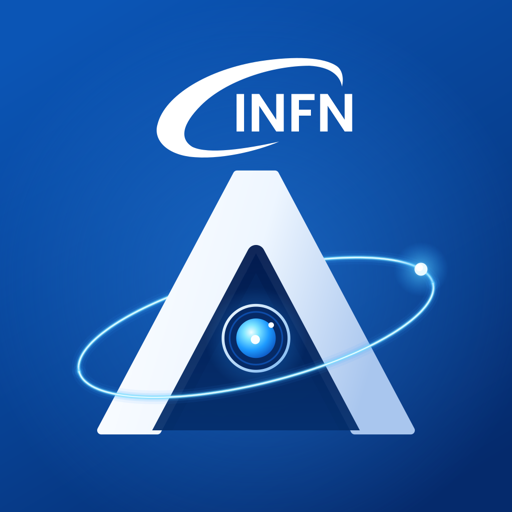
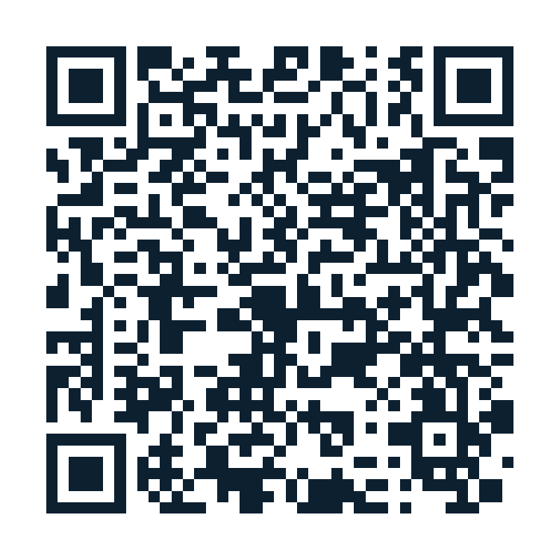
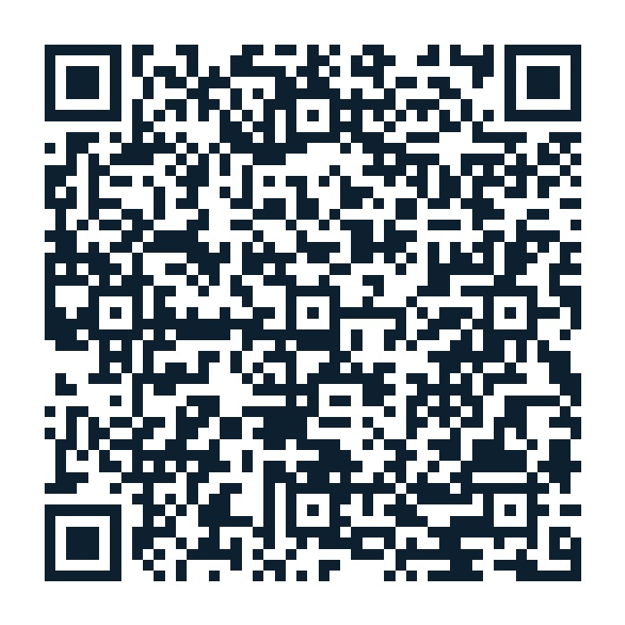

01◇
M-2
RF
IOC
PWR
Asset, in relazione.
Dall'inventario alla topologia funzionale: componenti, posizioni, installazioni e dipendenze diventano una rete navigabile.

ARGUS.Dalle infrastrutture scientifiche ai servizi complessi: ARGUS collega ciò che esiste, ciò che accade e ciò che sappiamo. Per trasformare informazioni disperse in decisioni migliori.
In un'infrastruttura complessa, una risposta è raramente in un solo posto.
È nei componenti, nei documenti, negli interventi e nelle persone che li conoscono.ARGUS nasce per dare continuità a questa conoscenza: rende navigabili le relazioni tra sistemi, eventi e documentazione, così che un problema possa essere compreso nel suo contesto.
Il progetto unisce una base di conoscenza strutturata, ricerca semantica e strumenti di AI per supportare analisi, operazioni e trasferimento del sapere.
Scopri la piattaforma ↗Il livello operativo di ARGUS: un unico spazio per organizzare asset, documentazione, ticket e conoscenza di progetto.
Dall'inventario alla topologia funzionale: componenti, posizioni, installazioni e dipendenze diventano una rete navigabile.
Procedure, specifiche e report con revisioni, approvazione e collegamenti agli oggetti a cui si applicano.
Incidenti, richieste e attività restano collegati agli asset coinvolti e alla conoscenza che aiuta a risolverli.
Domini e team diversi convivono nella stessa piattaforma, con tipi, flussi e permessi adatti al proprio lavoro.
Seleziona un elemento e guarda come il contesto prende forma. Il Knowledge Graph collega il patrimonio tecnico al lavoro quotidiano.
Un asset non è una scheda isolata. È collegato a incidenti, procedure e alla posizione che occupa nel sistema.
Ask ARGUS ricerca nella conoscenza del workspace, combina parole e significato, e restituisce risposte con riferimenti ai record consultabili.
ARGUS Knowledge Hub può descrivere domini diversi con workspace e schemi dedicati. Due ambienti dimostrativi mostrano come cambia il contesto, non il principio.
Infrastruttura, applicazioni, dispositivi, richieste e interventi: il servizio si vede insieme ai componenti che lo sostengono.
Un linac sintetico collega impianti, edifici, sicurezza, IT, documenti e problemi in un quadro operativo coerente.
Le demo utilizzano dati sintetici per illustrare i flussi della piattaforma.
Dal campo alla revisione, fino alla ricerca e all'analisi: ogni passaggio aggiunge contesto e mantiene una traccia.
Importa dati, registra asset e cattura osservazioni dal lavoro quotidiano.
Rendi esplicite relazioni fra oggetti, documenti, ticket e persone.
Revisioni, provenienza e permessi mantengono il dato affidabile.
Ricerca, Knowledge Graph e AI portano il contesto dove serve.
Due modi per entrare nell’ecosistema ARGUS. Scansiona il codice con il telefono o apri il collegamento.
Asset, ticket, documenti, Knowledge Graph e Ask ARGUS nel browser.
Apri la web app↗
Consulta asset e attività sul posto. La distribuzione Android è riservata ai tester autorizzati.
Apri ARGUS Field su Google Play↗
Il link Android richiede l’abilitazione come tester e una release pubblicata sul canale di test Google Play.
Scopri il progetto ARGUS e come Knowledge Hub può rendere più leggibili sistemi, interventi e documentazione.